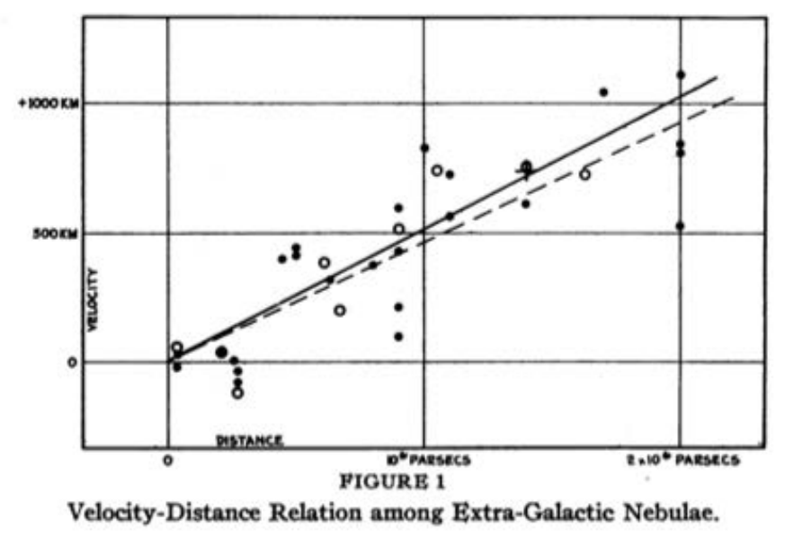

愛因斯坦造訪天文台前，哈伯已畫出什麼？
1931 年 1 月，愛因斯坦到加州威爾遜山天文台，與哈伯（Edwin Hubble）和亞當斯（Walter Adams）等人會面。加州理工學院保存的照片中，他正俯身從 100 吋胡克望遠鏡的目鏡向內看。兩年前，哈伯已發表這張圖，將星系距離和沿視線方向的速度放在同一張散布圖上。加州理工學院照片檔案
先看點雲的方向。較遠的星系整體上退行得較快，但同一距離附近仍有速度差異。迴歸線把這個趨勢化成一個斜率，可讀作距離每多 1 Mpc，模型預測的速度平均增加多少 km/s。再比較實線與虛線，看看把個別觀測先分組，會如何改變估計。這張圖是早期觀測的結果，斜率反映當時的距離尺度。
